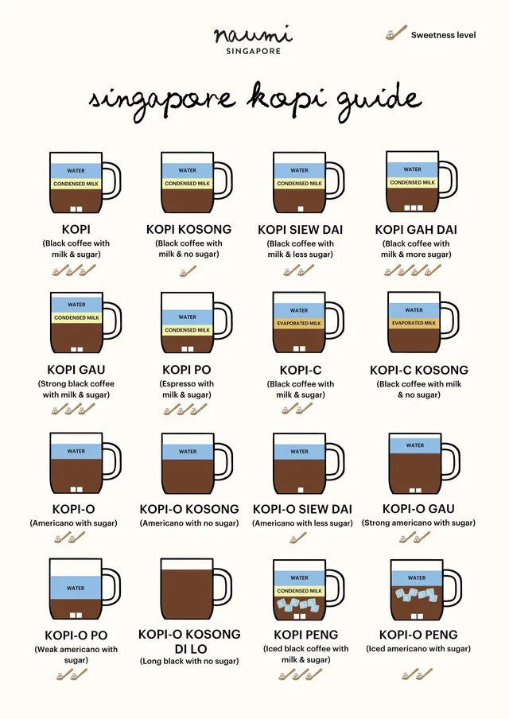

THE KOPITIAM COUNTER
How do you like your kopi?
Pick an order. Watch it come together.
Get to know what’s in your glass.
HOT / 热
Setting your glass on the counter…
01
Kopi
Sweet, rich & familiar.
Drag to turn · Scroll to zoomSeparated layers for illustration
Your kopi is ready100%
SPEAK A LITTLE KOPI
ONo milk
CEvaporated milk
KosongNo added sugar*
Siew daiLess sweet
Gah daiMore sweet
Gao / PoStronger / weaker
PengIced
*Use Kopi O Kosong for black coffee, or Kopi C Kosong for evaporated milk. Water is tinted blue in Layers mode so you can see it; a real kopi blends together.
Your reference guide & recipe notes

Inspired by your kopi guide
This interactive interpretation uses a glass, staged pours and ingredient layers. The displayed amounts and pouring order are teaching examples, not universal kopitiam recipes.
“Po” means weaker, not espresso. “Di lo” means without extra water. The guide’s “Kopi Kosong” is retained with an explanation about sweetened condensed milk.
Reference: user-supplied Naumi Singapore chart.
Singapore Tourism Board kopi guide ↗